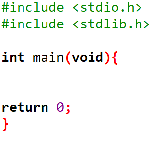
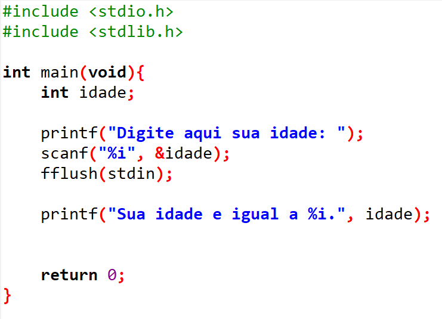
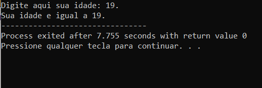
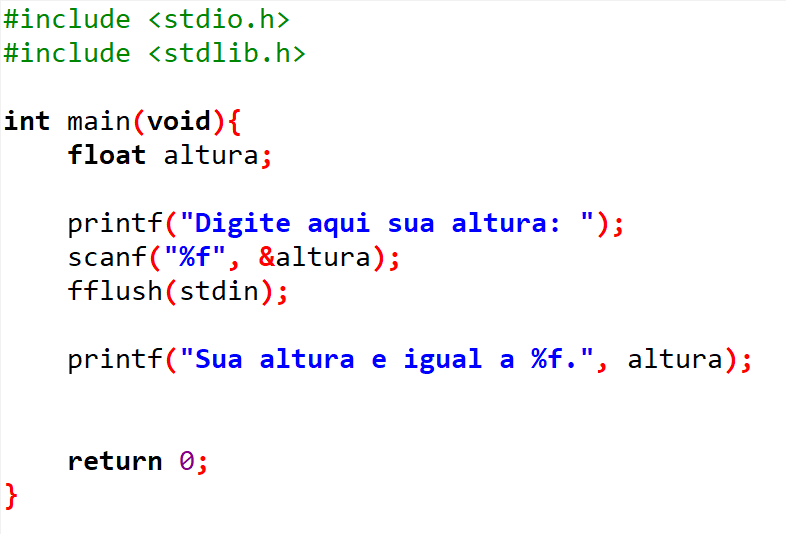
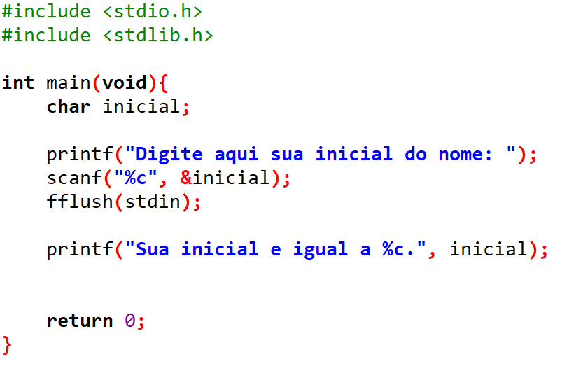
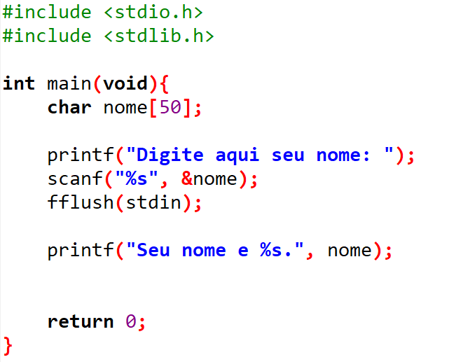

Em C, as variáveis são como caixas que armazenam diferentes tipos de dados. Cada tipo de dado tem suas características e ocupa uma quantidade específica de memória. Os tipos int, float e char são os mais básicos e utilizados com frequência.
Além dessas variáveis, também utilizaremos a tipo string, que apesar de não ser ‘natural’ em C, podemos introduzir em nosso código. E ela serve para a cadeia de caracteres, onde podemos adicionar mais caracteres junto da variável char.
Para iniciarmos com as variáveis, vamos tomar um exemplo para melhor explicação. Onde, vamos escrever um código que você põe sua idade dentro do próprio código, e no texto seguinte ele imprime o dado digitado.
Para começarmos vamos adicionar as tags básicas.
Em Seguida vamos criar uma variável da seguinte forma: Após o " int main(void){ ", digite: int - Seguido do nome da sua variável, que no nosso exemplo será idade.
Para inserir sua idade, utilize a variável criada: " idade = sua idade aqui; "
Agora vamos adicionar o comando “imprimir" (printf), e dentro dos parênteses e das aspas iremos adicionar %i, onde o “i” é parte do comando da variável int. E ele serve para reescrever de forma impressa o dado. Junto disso, precisamos especificar qual é a nossa variável. Exemplo: " printf(" %i",idade); "
É possível incrementamos nosso código, com caracteres e pequenos comandos.
De forma simples escreveremos as nossas tags básicas novamente em um novo arquivo. Em seguida adicionaremos uma variável int com o nome idade (int idade). Após isso adicionamos um comando o de imprimir:
Para fazer com que o programa escaneie o dado, escrevemos logo abaixo:
- Escaneia o dado e atribui o dado para a variável idade.
- Utilizado para ‘limpar o dado’, ou seja, caso o usuário digite algum caractere além do esperado pelo programa, apenas irá aparecer o que é esperado. Isso, caso eu acabe digitando acidentalmente na minha idade ‘19l.’, na minha saída de dado irá apenas aparecer 19.
E para finalizar, escrevemos o comando printf novamente para a saída do dado:
Ao final o código deve se parecer da seguinte forma:
Já no executador aparecerá assim:
Baseia-se no último exemplo, porém com a mudança da variável " idade " para " altura ", necessitando assim a utilização de virgula e tornando-se float. Ao final o código deve se parecer da seguinte forma:
Também se baseia no último exemplo, porém neste caso mudaremos a variável para uma letra do alfabeto. Ao final o código deve se parecer da seguinte forma:
Para fazer um programa que lê um nome inteiro e imprime, devemos utilizar a string. Após isso, na variável char, coloque o número de caracteres que o usuário poderá escrever. Exemplo:
E em seguida mude “%i” em scanf para “%s”
Após as modificações necessária, segue:
